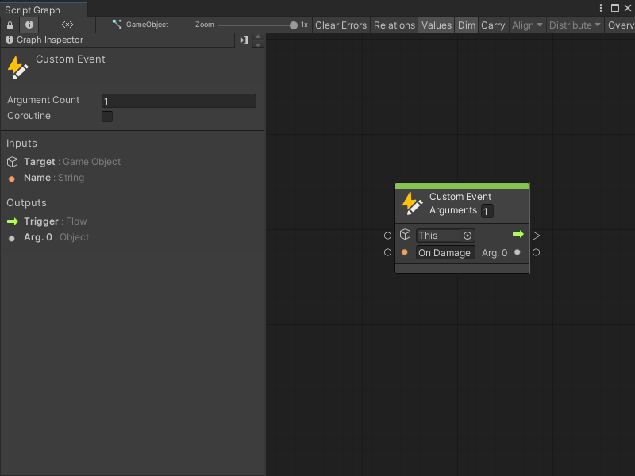

Events API¶
[!NOTE] For versions 2019/2020 LTS, download the Visual Scripting package from the Unity Asset Store.
Visual scripting provides a simple API to trigger custom events from C# script.
Usings¶
Add the following usings to your C# script to access the API.
using Unity.VisualScripting;
Triggering¶
A single method call is needed to trigger a custom event. Pass as many arguments as required.
CustomEvent.Trigger(targetGameObject, argument1, argument2, ...)
For example, this custom event node:

Can be triggered with this line of code.
CustomEvent.Trigger(enemy, "On Damage", 30);